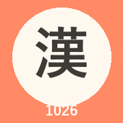

일본 초등학교에서 배우는 한자 1026자를
잊을 때쯤 다시 만나며 익히는 무료 앱
네. 광고·결제·회원가입이 없어요. 개인이 만든 학습 도구예요.
각자 폰(브라우저) 안에만 저장돼요. 서버로 보내지 않아서 다른 사람이 볼 수 없어요.
앱의 ⚙️ 설정 → 백업 코드 만들기로 코드를 복사해 메모 앱에 저장해 두세요. 새 폰에서 '불러오기'에 붙여 넣으면 이어서 할 수 있어요.
폰의 일본어 음성을 써요. 아이폰: 설정 → 손쉬운 사용 → 읽기 및 말하기 → 음성 → 일본어 음성을 받아 주세요. 무음 모드도 확인해 주세요.
아니요. N5·N4 구분은 공식 목록이 없어 일반적인 학습 목록(비공식) 기준이에요. 한자 목록·학년은 일본 문부과학성 학년별 한자 배당표를 따랐어요.
아래 '오류 제보'로 알려 주세요. 확인 후 고쳐요. (뜻·예문 일부는 AI의 도움을 받아 만들고 검증했지만 오류가 있을 수 있어요.)
틀린 뜻·읽기·예문이나 불편한 점을 알려 주세요.
어떤 한자·단어인지, 어느 화면인지 함께 적어 주시면 빨리 고칠 수 있어요. 개인이 운영해서 답변이 늦을 수 있어요.
https://gptlf775.github.io/kanji/
이 주소가 아닌 곳에서 이 앱을 유료로 팔거나 광고를 붙여 배포한다면 공식 앱이 아니에요.
초등 한자 1026 · 개인 학습 프로젝트